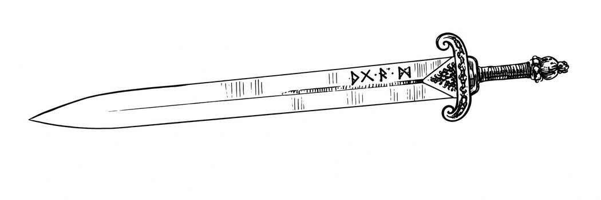

护甲、护甲等级与武器 · Armor, Armor Class & Weapons
护甲、护甲等级与武器：护甲 · Armor, Armor Class & Weapons: Armor
先给出扩充护甲负重表，再说明青铜板甲、精灵锁子甲、野战板甲、全身板甲及小圆盾。表内重量保留原书所写的“＋”记号，原页没有另作解释。
护甲种类与负重表 Types of Armor & Encumbrance
| 护甲种类 | 体积／携带碍事程度 | 重量 | 基础移动 | 价格 |
|---|---|---|---|---|
| 条板甲 Banded | 笨重 | 35 磅＋ | 9″ | 90 金币 |
| 青铜板甲 Bronze Plate Mail | 笨重 | 45 磅＋ | 6″ | 100 金币 |
| 锁子甲 Chain Mail | 较碍事 | 30 磅＋ | 9″ | 75 金币 |
| 精灵锁子甲 Elfin Chain Mail | 不碍事 | 15 磅 | 12″ | 不公开出售 |
| 野战板甲 Field Plate | 较碍事 | 55 磅 | 6″ | 2,000 金币 |
| 全身板甲 Full Plate | 较碍事 | 65 磅 | 6″ | 4,000 金币 |
| 皮甲 Leather | 不碍事 | 15 磅 | 12″ | 5 金币 |
| 衬垫甲 Padded | 较碍事 | 10 磅 | 9″ | 4 金币 |
| 板甲 Plate Mail | 笨重 | 45 磅 | 6″ | 400 金币 |
| 环甲 Ring Mail | 较碍事 | 25 磅 | 9″ | 30 金币 |
| 鳞甲 Scale Mail | 较碍事 | 40 磅 | 6″ | 45 金币 |
| 小圆盾 Shield, Buckler | 不碍事 | 3 磅 | — | 5 金币 |
| 大盾 Shield, Large | 笨重 | 10 磅 | — | 15 金币 |
| 小盾 Shield, Small | 不碍事 | 5 磅 | — | 10 金币 |
| 木制小盾 Shield, Small, Wood | 不碍事 | 3 磅 | — | 1 金币 |
| 夹板甲 Splint Mail | 笨重 | 40 磅 | 6″ | 80 金币 |
| 镶钉皮甲 Studded Leather | 较碍事 | 20 磅 | 9″ | 15 金币 |
表内重量以人类尺寸为准；精灵锁子甲从不在公开市场出售。
新护甲种类说明 · Descriptions of New Armor Types
青铜板甲是较早、较便宜的板甲：厚青铜片覆在皮甲或衬垫甲外。不含铁，因而免受锈蚀怪等危害；但防护只有 AC 4，逊于普通板甲的 AC 3。结构还使穿戴者容易受背后攻击，敌人从后方攻击时命中另得 ＋2，与其他适用加值并用。
精灵锁子甲极稀有，仅由精灵制造；精灵连对本族冒险者也严守制作秘密。它貌似极轻的锁子甲，盗贼可以穿戴，但能力可能略受妨碍。精灵有时会把非魔法的精灵锁子甲赠给为其族人立下重大而无价功绩的英雄。
野战板甲由较轻、相互扣接的甲片覆盖全身，包含可闭合面甲的头盔、护手和护靴。因结构平衡，体积碍事程度仅同锁子甲，防护却优于普通板甲。须由熟练铠甲匠为穿戴者量身装配；非魔法的成甲只能由原定穿戴者使用。
野战板甲还可吸收伤害：任何物理或魔法攻击每有一枚伤害骰，护甲便吸收 1 点。长剑一击减 1 点；伤害 3d10的冰风暴减 3 点；9 生命骰龙的喷吐减 9 点。若某伤害骰只掷出 1，该骰便不会伤到穿戴者。护甲累计吸收 12 点后受损，修理前不再吸伤，护甲等级防护也恶化一档。训练有素的铠甲匠每恢复 1 点吸伤能力须收费 100 金币、花 1 天。
全身板甲由精制、完美扣接的甲片组成，下面衬锁甲，覆盖全身；另有装饰过、可闭合面甲的头盔、护手和甲靴。因设计精良，它也只像锁子甲那样碍事，却提供最强的非魔法防护。须由铠甲匠为个人量身装配；非魔法成甲不能转给别人穿。通常只有久经战斗的骑士、圣武士与战士穿用，游侠、野蛮人和牧师冒险者则很少穿。
与野战板甲相似，全身板甲每枚本应伤害穿戴者的伤害骰可吸收 2 点，所以掷出 1 或 2 的伤害骰不会造成伤害。累计可吸收 26 点；达限后须修理，期间护甲等级防护恶化一档，也不再吸伤。合格铠甲匠每恢复 1 点吸伤能力收费 200 金币、花 2 天。
小圆盾在每一近战轮只能防护使用者所选的一名对手。它轻小，可绑在手臂上，弩手和投石索手也能使用。对半身人、侏儒等小型亚人，它却可提供完整防护，此时按普通小盾处理。

战马与马铠 · Warhorses and Barding
以下译录战马培育、骑战和马铠规则。
战马
战马是经过战斗训练的坐骑。马匹即使驯养后通常仍易受惊，真正的战马须经过精挑细训，能服从命令、适应战场声响与混乱，不会因突然动作或血腥味胆怯；同时强健、有耐力，且在战斗中有攻击性。普通矮马、挽马和野马的攻击方式是咬；战马另经训练，会用前蹄攻击。
可选用战马的人物包括受过骑战训练的骑士、圣武士、战士、野蛮人和游侠；这些职业能够使用坐骑的额外攻击方式，并在战斗中充分操控坐骑。培育战马则需熟练训练者挑选候选马，多数是幼公马，训练数年后再交给骑手带入实战。所谓文明国家可能由军队和独立机构负责；所谓蛮荒地区则常由部族少年和战士在成年训练过程中完成。后者多培育轻型战马，少数较发达的群体也会有限地培育中型战马；原书举蒙古人为例。
| 种类 | 原书说明 |
|---|---|
| 轻型战马 Courser | 欧洲中世纪所称的 courser；轻、快、耐力佳，通常肩高 14–15 掌，随马匹来源与骑手体型变化。 |
| 中型战马 | 比轻型更大、更强，通常肩高 15½–16½ 掌；蒙古精锐枪骑兵、萨拉森精锐与欧洲一般骑兵皆曾使用。 |
| 重型战马 Destrier | 大而壮，肩高 18 掌或以上；原书以克莱兹代尔马为例。配合重装骑士曾能冲垮没有同等装备与坐骑的敌人，后来受到熟练部队的长弓和长枪克制。 |
轻型战马可迫使非战马让路，中型战马可压倒轻型，重型至少可推开任何较轻的战马。这种压制使较轻坐骑倒地，骑手除非有骑术技能（如骑士所具）也会被甩下。经过战斗训练的坐骑不仅猛攻，还会等待落马骑手重返马鞍，甚至保护他免受攻击。训练精良者可能把重伤骑手带离战场，送回住处。
马铠 · Barding
马铠覆盖战马的头、颈与身体。马须能在骑手和其他装备之外再负担马铠重量，才能得到防护；较轻马匹不能使用较重马铠。
| 马铠种类 | 护甲等级改善 | 重量 | 包括的形式 |
|---|---|---|---|
| 皮革 | 1 档 | 160 磅 | 各种衬垫马铠。 |
| 鳞甲 | 2 档 | 250 磅 | 皮革镶钉、环甲等。 |
| 锁甲 | 3 档 | 350 磅 | 多种金属带和甲片，分类中也包含衬垫层。 |
| 板甲 | 4 档 | 500 磅 | 板甲片为主，其他部位由锁甲支持。 |
穿马铠后的基础移动速度
| 战马 | 皮革 | 鳞甲 | 锁甲 | 板甲 |
|---|---|---|---|---|
| 轻型 | 21″ | 15″ | 不可 | 不可 |
| 中型 | 17″ | 15″ | 12″ | 不可 |
| 重型 | 15″ | 14″ | 13″ | 12″ |
穿马铠也影响远程旅行耐力。若坐骑在旅途中一直穿着马铠，可把上表基础移动数值直接作为一天可走的英里数粗估。
魔法马铠极为罕见，故不列入随机发现魔法物品。按种类而非护甲等级比较，其价值至少是同类人物护甲的 5 倍。魔法加值最高 ＋3：其中 65%为＋1、25%为＋2、10%为＋3；种类分别为皮革 10%、鳞甲 15%、锁甲 25%、板甲 50%。
独角兽与狮鹫的精灵锁子甲可由地下城主自行允许；其重量与移动影响同皮马铠，防护同锁马铠。一般能飞的坐骑只可穿皮革或精灵锁子马铠，移动速度因此下降 1/8；水生坐骑不能有效披铠。大象等其他坐骑可以披铠，通常只有板马铠明显影响速度：极强壮坐骑的速度减少 1/5 至 1/8，大象只减少 1/8。

新武器说明（一） · Descriptions of New Weapon Types, Part I
以下依顺序，译录回索棍至套索；捕人叉和后续武器见续篇。
回索棍 · Aklys
带配重的短棍，棍尾系结实皮索。虽可手持击打，主要用途是投掷，随后拉索收回。每次命中有 5%几率缠住目标，亦即命中后掷 d20 得 20。皮索约 10 尺长，通常绑在使用者腕部或护手上。若目标不大于人类体型，使用者可将其拉下坐骑，或使双足者跪倒、非双足者侧倒；更大的目标反可能把投掷者拖倒。
缠绕持续到有人花 1 轮解开棍与索、皮索断裂或被割断（须造成 2 点切割伤害），或使用者设法甩脱系在自己身上的索为止。索通常系在腕部或护手，甩脱不一定容易。
投矛器 · Atlatl
用于投掷短标枪的投射杆；杠杆与导槽提高射程、速度和准确度。古代投矛者也会把绳索绕在标枪上，投掷时留住一端，使标枪旋转以提升命中。与投矛器配用的标枪虽更短、更轻，因速度较快仍造成同样伤害。
吹箭筒 · Blowgun
主要由丛林原住民使用。器具长而脆，在普通战场无法有效使用：筒身或射手稍受碰撞就会完全失去准头。实际使用时常架在支架上避免摇晃。针镖常涂渗入性毒药，以便对除了最小目标外的生物造成致命伤害。
蒺藜 · Caltrop
有四或六个尖脚的障碍物，六脚型近似儿童抓子游戏的玩具。直径约 半尺，各尖脚长约 3 英寸，彼此约成 70° 或 90°。抛撒或放在地上阻碍敌人逼近。知道前方有蒺藜的智慧生物通常能推开或绕行，但该轮移动速度减半；不知情或无智力者则会踩入。
按脚上护具决定被攻击者护甲等级，不加敏捷奖励。每当一只脚、爪或蹄经过一平方码蒺藜地，就以一只 1＋1 生命骰怪物攻击该足部护甲来判定有无踩中。每次命中有 25%几率使移动速度降低 25%，持续 4 天；若两足均中，康复的 8 天里可能几乎无法移动。法术当然可以减轻影响。尖脚短于 2 英寸的小蒺藜效果不足，游戏中可忽略。
蒺藜很难携带，容易扎穿背包、布袋，携带时跌倒尤其危险，通常要装箱运输。使用不需武器熟练或特殊技能。
手弩 · Crossbow, Hand-held
由黑暗精灵创制，地下世界远比地表常见。发射只需一手，装填和重新装填需双手。黑暗精灵常在弩矢涂渗入性毒药或催眠药；被后者涂过的镖击中，目标须以 −4修正对毒素豁免，否则失去意识。
地表非卓尔来源的手弩标价 300 金币；在黑暗精灵领地，因较常见，低至 30 金币即可购得。特制弩矢在当地的价格也约降为十分之一，至每支 10 金币。
绞索 · Garrot
多用绳制，也可用布或金属丝。使用者必须从背后攻击，目标须未察觉攻击或无法有效防御。完全遭背后突袭者可受攻击；即使未注意绞索，正在与其他人近战而持续闪避的目标也不适用。目标须是类人生物，颈部相对无防护；厚皮领就能阻止。目标脖子高度不得超过使用者肩膀 1 尺；若有肢体、工具或武器挡住绕颈，便不能完全套住，只造成 1 点伤害。
成功命中先造成武器所列伤害，若使用者未被迫放手，目标会在下一轮结束时死亡。任何人成功攻击绞索使用者（目标自己可攻击，但命中 −2）、成功进行任一种徒手战斗攻击，或目标自己成功掷出弯曲铁条检定以挣开绞索，均会破坏攻击并救其性命。若目标通常每轮只有一次攻击，同轮不能既攻击又尝试弯曲铁条；后者算该轮一次战斗动作。
鱼叉 · Harpoon
一种投掷矛，多数型号枪头可从杆上脱离，并系绳，命中时把目标连到投掷者或固定物。对多数目标，命中表示倒钩已嵌入；除非绳索系在坚固物上，缠绕的一般规则参照上文回索棍。绳索须长到容许所需射程，投掷时及目标突然远离时还须能自由放出。
若目标智力至少 2，而且有能力拔出叉头或割断绳索，可对毒素豁免；成功便自行脱离。失败则仍被系住，另受 1 点伤害，并可能按投掷者意愿被拉近 1″，前提是投掷者的体型、体重与力量足以做到。原书参照《邪魔宝典》的寇涛鱼人。
钩镰戟 · Hook Fauchard
主要用于把敌人拉下坐骑或绊倒。它是把普通镰戟顶端的钩子加长，弯成镰刀形；使用者横扫，以钩包住目标。命中后有 20%几率使对方落马、跪倒或伏倒，但前提是使用者比目标更大，或至少达到目标身高和体重的 50% 以上。
套索 · Lasso
游戏中不直接造成伤害。命中后与鱼叉命中近似，但若使用者持续拉紧绳索，就只能扯断或割断套索才能脱离。目标有 75%几率被拉下坐骑；双足目标若身高与体重均不超过使用者的 150%，另有 25%几率被拉倒。多名生物可合力提高可能性，如骑者连同坐骑，或几人一起抓住绳尾。
割断套索须造成 2 点切割伤害。目标也可用力量扯断，成功率同弯曲铁条，但每次被套住仅允许尝试一次。
新武器说明（二） · Descriptions of New Weapon Types, Part II
承接第 77 页的武器，以下译录的捕人叉至长鞭。原页的持鞭插图保留于本节。
捕人叉 · Man Catcher
有两支弯叉的长柄武器，可围住约人类体型的类人生物。比人类大或小 50% 以上者不受影响：不是叉围不住，就是能从叉间滑出。简单型两叉末端向内弯，允许目标进入，却难以退出，尤其在使用者操纵时。复杂型有可活动叉臂，张开待用，目标触及靠近叉柄的部分时便略微合拢。两种叉都有锋利边缘与尖刺，既伤目标也妨碍用手挣脱。
被夹住者失去盾牌和敏捷奖励，还能被推拉，每轮自动受 1–2 点伤害，并有 25%几率被拉得跪倒或伏倒。目标可尝试弯曲铁条检定挣开，次数不限；若没戴手套或其他防护，每次尝试会受 1–4 点伤害。旁人可迫使持叉者松手，或砍断叉柄（需 6 点切割伤害）救出目标。
闷棍 · Sap
也称 blackjack，通常是装沙或铅弹等物的小皮袋。主要用于把人打昏，因此任何头部遮盖都会削弱效果。除非目标头部无遮掩或仅覆轻布，否则虽可命中造成伤害，不会昏厥。
击中裸露或轻布覆盖的头部时，使目标昏厥的几率为使用者每点力量 5%；力量高于 18时必定昏厥，18/01已足够。击中头部以外仅造成一半伤害，无其他效果。
刺钉小圆盾 · Spiked Buckler
带攻击性的盾牌中，只有小圆盾实用；更大的盾难以迅速转动，突起也容易被敌人抓住。此盾防御如普通小圆盾，每轮可帮助抵御一次攻击。制作精良者的刺有刃，但实际攻击一般是盾刺冲撞，几乎不会挥砍。
若敌人在一臂之内，持盾者可在本轮另作一次盾攻击，须排在常规武器攻击之后，每轮至多一次。若它是第二种攻击方式，命中掷骰 −2，并与其他适用减值累加。
杖索 · Staff Sling
长至少 4 尺的杆，顶端固定一个带弹囊的索带。把弹丸放在索带最宽处，抓住另一端，用力横挥或从身后向上挥；在适当时刻松开索端，挥动惯性便把弹丸射出。它近似小型攻城器，适于把小而较重的弹丸越过墙等障碍。
它比普通投石索慢、较不准，但可沿高弧线投出更重弹丸，射程却较短。近处目标极难命中，所以游戏中实际只用中程或远程。若投掷可燃物等，按《地下城主指南》的类手榴弹飞弹表判定。
弯刃剑 · Sword, Falchion
得名于略弯、近似镰刀的形状。它可按弯刀处理；弯刀泛指军刀、土耳其弯刀等许多式样。但欧洲中世纪一些弯刃剑更重，尖端也用于刺击，因此本书把它单列为扩充武器。地下城主可把发现的魔法阔剑中 25%视为弯刃剑。
镰形剑 · Sword, Khopesh
这是古埃及武器，约公元前十世纪已退出使用，并非中世纪兵器；地下城主若认可，可因其造型适合游戏而加入。柄与护手约长 6 英寸，剑身先从护手直出约 2 尺，然后弯成约再长 2 尺的镰形，但只使整体有效长度增加约 1½ 尺。弯部大致像缺左竖画、上端有饰角的方正大写 D。它沉重笨拙，速度因数高，难以熟练使用，挥空后尤其难快速收回。
弯钩除伤人，还可能钩住目标或武器。每次命中有 5%几率钩住目标。若目标没有比持剑者在身高和体重上都小 50%，钩住后主要使目标 10 段内无法有效攻击；若确实更小更轻，则有 25%几率被拉倒，75%几率攻击受阻。比较体重时，双方力量高于 18的每一点或每一档差异，可对最终体重比较增减 5%。
有突起或凹槽的武器也可能被钩；匕首、普通剑、长矛等光滑武器则不适用。每次未命中仍有 5%几率钩住对方适用的武器。钩住后有 10%几率将其夺走；否则有 80%几率使对方 10 段内无法有效攻击，另有 10%几率由对手力量或杠杆作用扯脱持镰形剑者的握持。
其古老来历和形状使它很适合德鲁伊。地下城主可在战役中放入普通或魔法镰形剑；发现的魔法弯刀中 10%可改作镰形剑。
长鞭 · Whip

只有受过高强度训练的使用者才真正危险。要造成伤害，鞭子须碰到裸露或轻微覆盖的皮肉；厚衣、浓密毛发会挡住攻击，直至反复抽打扯去遮蔽。大象、犀牛、河马等厚皮至多微感刺痛而无实际伤害；厚鳞等坚实防护连带配重头的重鞭也几乎感受不到。
鞭子还能缠住肢体或武器。命中后，不熟练者仅有 5%缠绕几率；熟练者可自行选择是否尝试，几率为使用者每等级 5%。若缠上，按下表定部位：
| 缠绕部位 | 几率 | 效果 |
|---|---|---|
| 一肢 | 50% | 10 段内无法有效攻击。 |
| 双肢 | 10% | 同上，且有 25%几率在此期间跪倒或伏倒，之后须重新起身。 |
| 持武器的手臂与武器 | 20% | 10 段内无法有效攻击，且有 10%几率丢失武器；若武器有刃，反有 50%几率割断鞭子。 |
| 头／颈 | 20%；未使用武器的对手为 40% | 10 段内无法有效攻击；若颈部无厚皮、重皮革、盔甲或浓密鬃毛等防护，另受绞索式伤害。 |
熟练使用者可掷 3d6−2，不超过自己的敏捷即可解开鞭子。否则须等鞭子被扯断、割断，使用者自行拉脱，或目标拉脱；目标自行拉脱几率为 5%＋每点力量 1%。